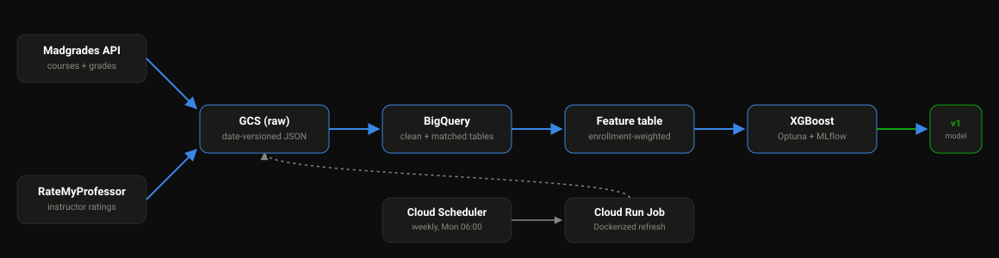

A grade outcome classifier for UW–Madison courses, trained on real Madgrades grade history and RateMyProfessor instructor ratings — not a toy dataset, the actual thing.
Pulled live from Madgrades and RateMyProfessor's public APIs — every number below is from an actual run, not a sample or a mock.
Predicting the modal grade (A / AB / B / BC / C / D / F) for a course offering, evaluated on a time-based holdout — the most recent academic year, never seen during training.
F1 score by grade, on the holdout year. The model is strong on the dominant A class and picks up real signal on B; AB/BC recall is weak — those grades sit in a band the available features don't separate well.
| Grade | Precision | Recall | F1 | Support |
|---|---|---|---|---|
| A | 0.907 | 0.962 | 0.934 | 9,139 |
| AB | 0.490 | 0.156 | 0.237 | 767 |
| B | 0.429 | 0.434 | 0.432 | 580 |
| BC | 0.000 | 0.000 | 0.000 | 28 |
| C | 0.500 | 0.225 | 0.310 | 40 |
D and F grades are under 0.1% of all records and don't appear in the holdout year at all, so they're omitted from both charts above.
Row-normalized (% of each true grade's actual outcomes) — the honest view when one class dominates, since a raw-count heatmap would just show a single blazing cell for A→A and hide everything else.
| Pred A | Pred AB | Pred B | Pred BC | Pred C | |
|---|---|---|---|---|---|
| True A | 8793 | 96 | 240 | 4 | 6 |
| True AB | 575 | 120 | 71 | 1 | 0 |
| True B | 295 | 29 | 252 | 1 | 3 |
| True BC | 21 | 0 | 7 | 0 | 0 |
| True C | 13 | 0 | 18 | 0 | 9 |
Madgrades and RateMyProfessor feed date-versioned raw data into GCS, which flows through BigQuery into a feature table and a tuned, tracked model — with a scheduled job keeping it all current.
